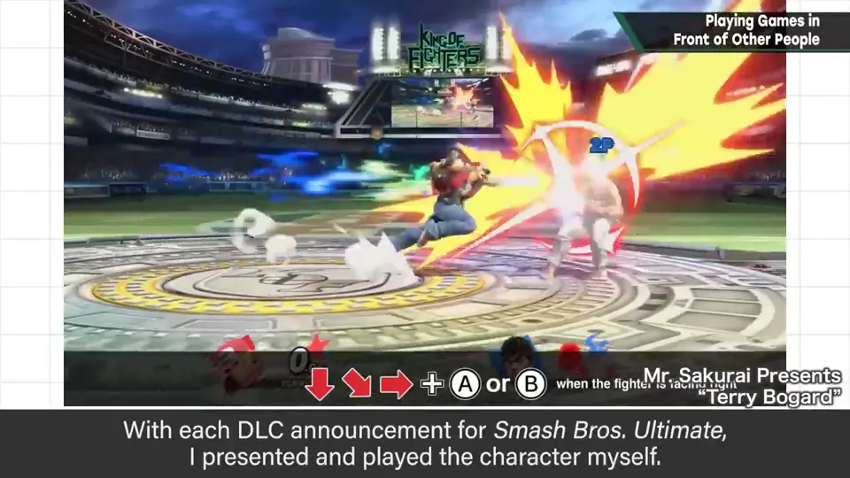
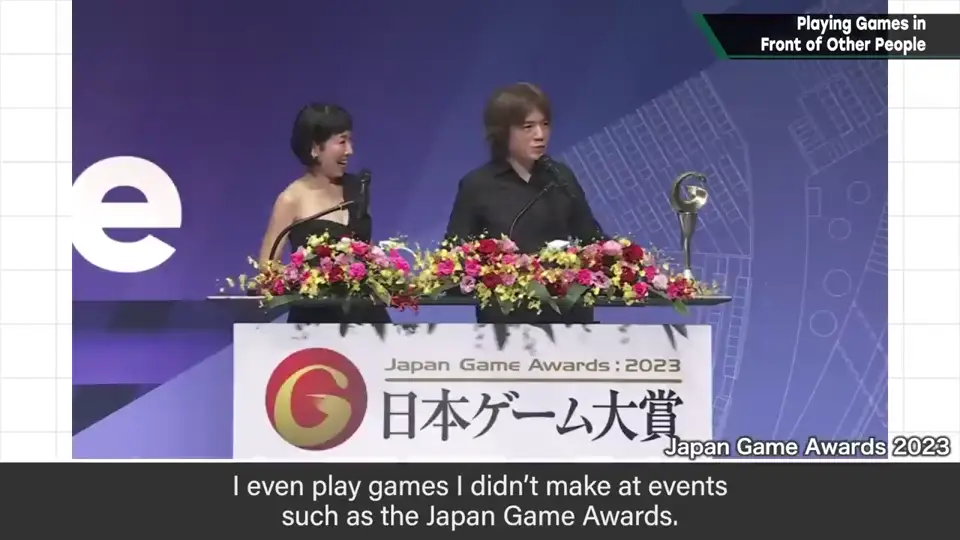
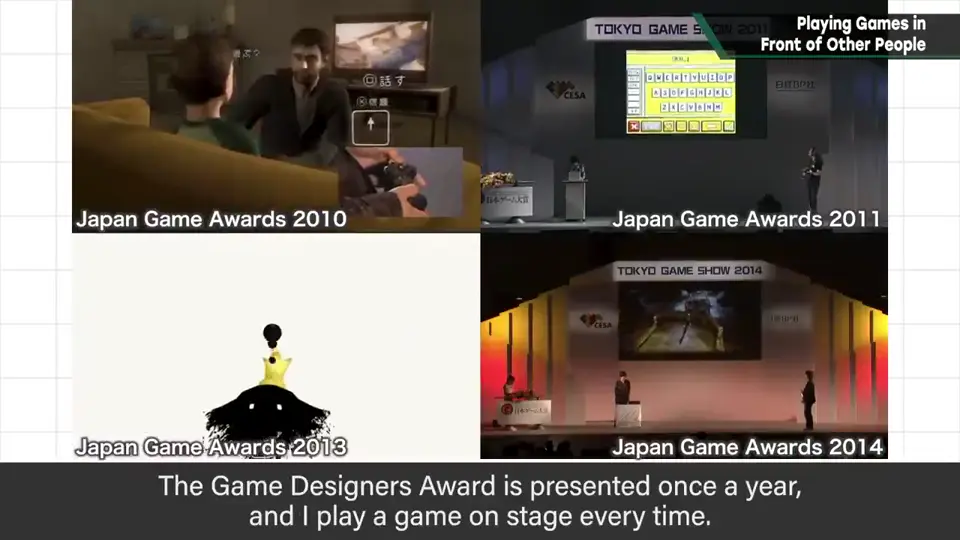
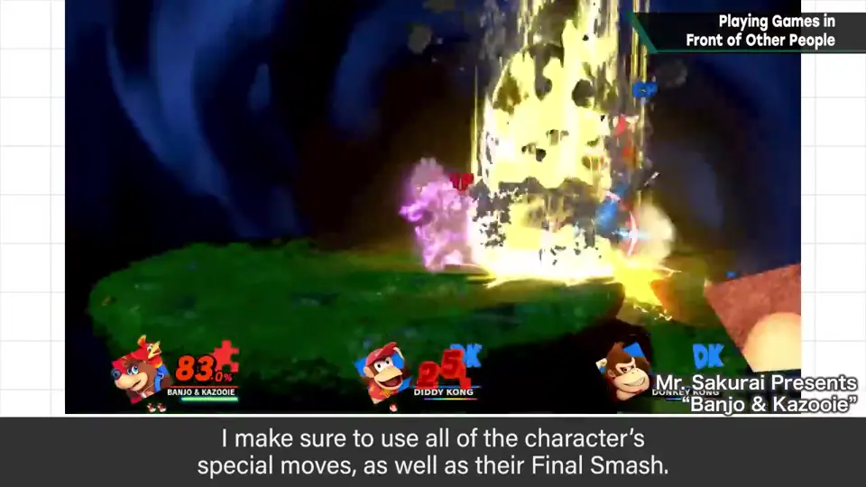
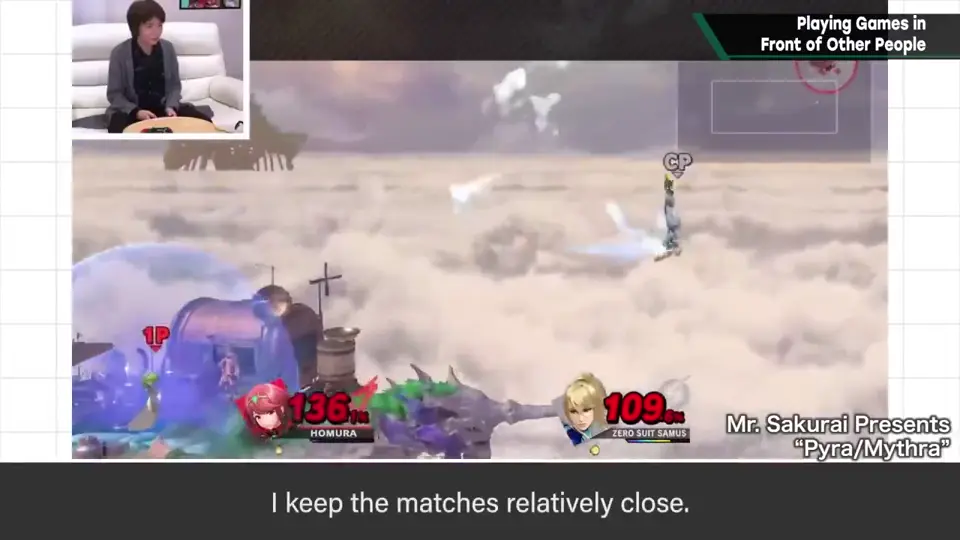
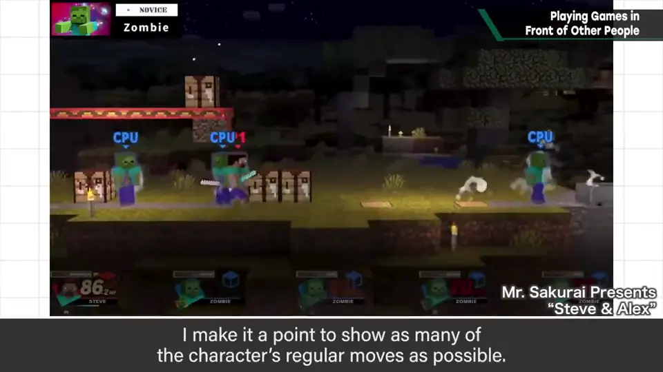
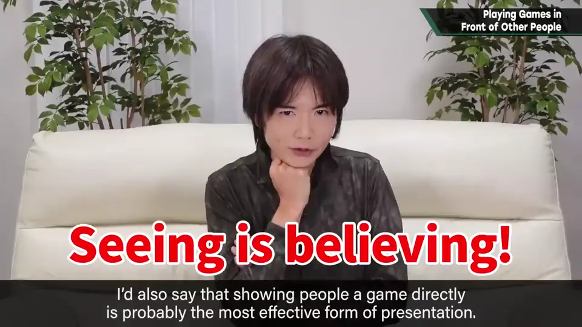
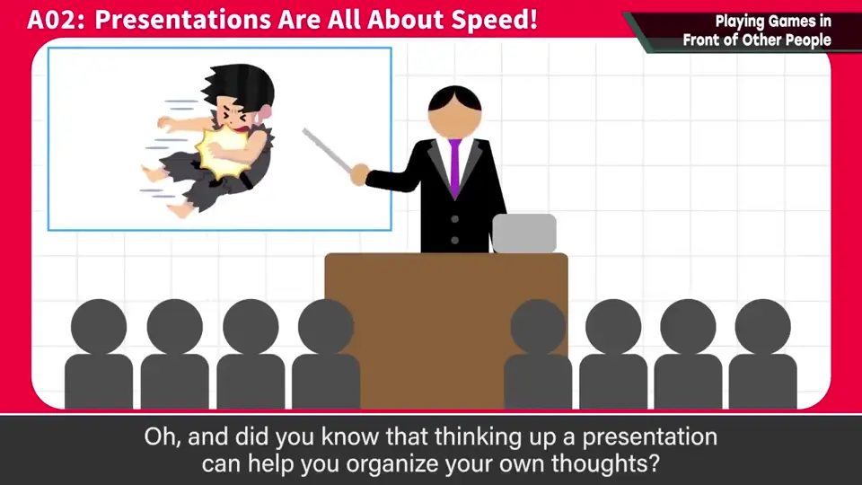
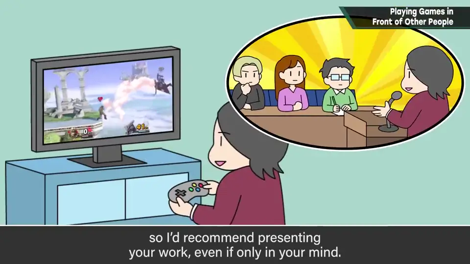

速览
想想看，樱井在人前玩游戏的次数异常多，在游戏总监中也许是最多的。尤其多被看到的是「樱井政博的○○」系列：《大乱斗 SP》每次发表 DLC 他都亲自玩。其他活动也会玩；台上的游戏环境不好，常常很难。即使不是自己做的作品，他也会在日本游戏大赏上玩：游戏设计师大奖每年发表一个，他每次都在台上玩，持续了 10 年以上。总之在人前玩游戏的机会很多。其实在「○○」的测试游玩中，他注意几件事：必杀技和终极必杀一定全部用出；不要赢得太悬殊（比赛保持一定接近）；也有意识地多展示普通招式。说白了，就是尽量「拿到素材」。当然，不理解游戏内容就玩不了。在人面前亲自演示，可能是效果最高的演示。你知道吗？思考演示也有助于整理自己的想法——能教人的才算懂。即使觉得「在人前展示自己做的东西太难为情」，设想给人看也有非常多的好处，所以推荐在脑海里也演练一下：想象顾客的反应，也许会看到一些东西。
1. 人前玩游戏的机会 0:04
想想看，樱井在人前玩游戏的次数异常多，在游戏总监中也许是最多的。
尤其常被看到的是「樱井政博的○○」系列：《大乱斗 SP》每次发表 DLC 时，他都亲自试玩。


其他活动中也会玩。台上的游戏环境不好，常常很难玩。
即使不是自己的作品，他也会在日本游戏大赏上玩：游戏设计师大奖每年发表一个，他每次都在台上玩，已经持续了 10 年以上。

2. 演示时注意的事 1:06
在「○○」的测试游玩中，他注意几件事：
- 必杀技和终极必杀一定全部用出
- 不要赢得太悬殊
- 有意识地多展示一些普通招式



3. 当面演示的力量 1:46
当然，不理解游戏内容就无法游玩。而在人面前亲自演示，可能是效果最高的演示。


你知道吗？思考演示也有助于整理自己的想法——能教别人，才算真的懂。
4. 在脑海里演示 2:05
即使觉得「在人前展示自己做的东西太难为情」，设想给人看也有非常多的好处。

自测题
1. 樱井在「樱井政博的○○」演示时注意哪些事？
必杀技和终极必杀全部用出、不赢得太悬殊、多展示普通招式——尽量多拿素材。 1:06
2. 为什么樱井认为当面演示很有效？
亲眼看到最有说服力（Seeing is believing），可能是效果最高的演示。 1:46
3. 即使不真的在人前演示，设想演示有什么好处？
能整理自己的想法，想象顾客反应能发现东西。 2:05